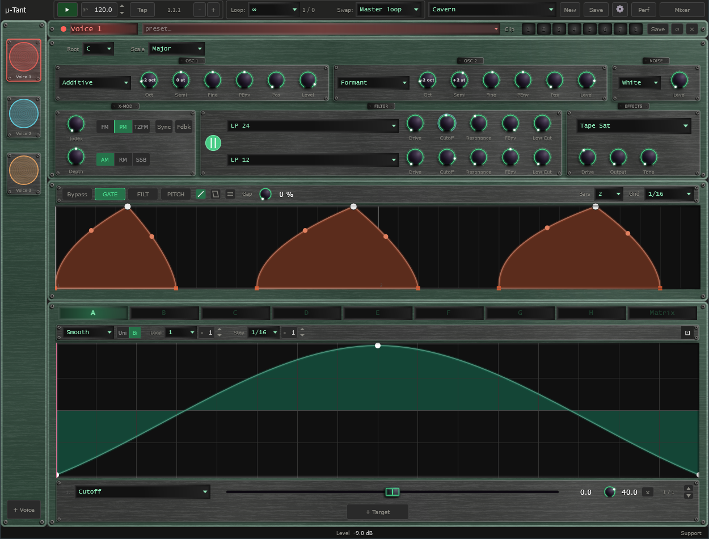

What is a wavetable drone synth?
A drone synth makes a sound that never stops. A wavetable drone synth does it with wavetable oscillators, so the tone can change shape while it holds.
Wavetable, in plain words
A wavetable oscillator stores a row of different waveforms and lets you glide between them. Move the position and the sound shifts from soft and round to bright and buzzy, without changing pitch.
Drone, in plain words
A drone is a held note or chord that sits underneath everything else. It is the base of ambient, dark techno, industrial and a lot of film music. Left alone it can get dull, so the interest comes from slow movement: filters opening, oscillators detuning, modulators drifting.
Adding a rhythm
Some drone synths add a gate sequencer, a step pattern that opens and closes the sound. The drone keeps running, but you hear it in pulses, with a different filter and pitch on each step. That is the idea behind mu-Tant: two wavetable oscillators with FM and ring modulation between them, cut into rhythm by an envelope gate sequencer of up to 16 bars.
Good for
- Pads and beds that evolve slowly.
- Pulsing basslines that are really a held tone.
- Sound design and textures.

Questions people ask
Is there a free wavetable drone synth plugin?
mu-Tant is free to download as VST3, CLAP and standalone for Windows. Every feature works; a one-off licence is optional and removes the licence reminder.
What is the difference between a drone synth and a normal synth?
A normal synth plays a note when you press a key. A drone synth plays all the time, and you shape it with filters, modulation and a gate pattern.